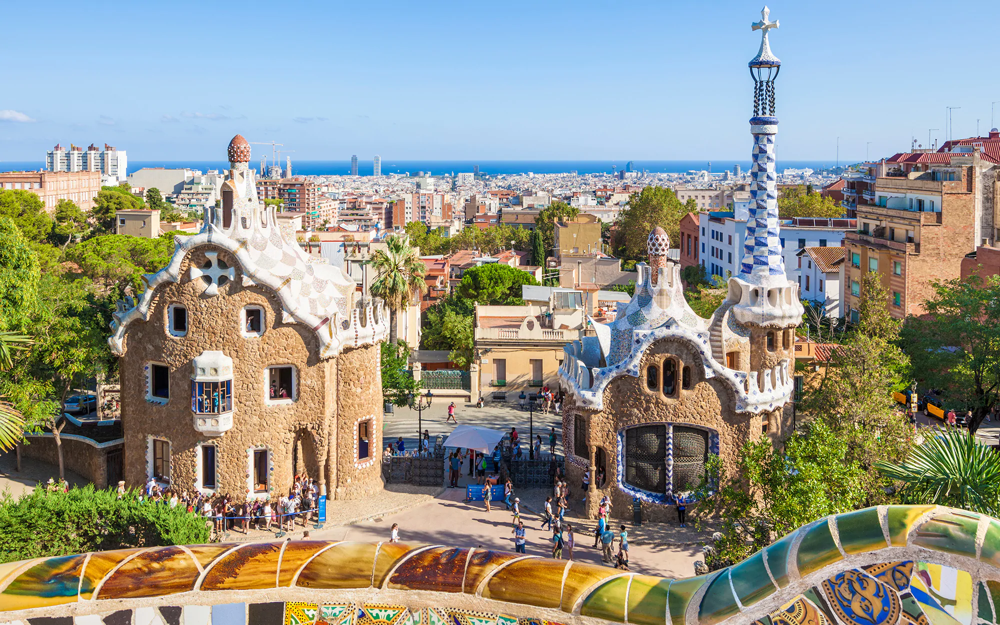
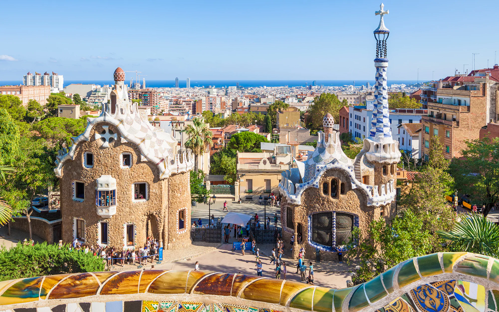

Barcelona
Founded as a Roman city, in the Middle Ages Barcelona became the capital of the County of Barcelona. After merging with the Kingdom of Aragon, Barcelona continued to be an important city in the Crown of Aragon as an economic and administrative centre of this Crown and the capital of the Principality of Catalonia. Barcelona has a rich cultural heritage and is today an important cultural centre and a major tourist destination. Particularly renowned are the architectural works of Antoni Gaudí and Lluís Domènech i Montaner, which have been designated UNESCO World Heritage Sites. Since 1450, it is home to the University of Barcelona, widely considered the most prestigious university in Spain. The headquarters of the Union for the Mediterranean are located in Barcelona. The city is known for hosting the 1992 Summer Olympics as well as world-class conferences and expositions and also many international sport tournaments.

 
